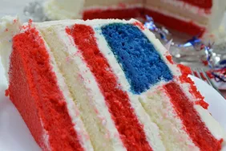

Cake

Unfurl the red, white, and blue with this beautiful, easy, and patriotic flag cake perfect for the 4th of July, Memorial Day, or any favorite occasion.
Assemble and frost the pretty cake and wait for the oohs and ahhs!
- 2 (15.25 ounce) packages white cake mix
- 9 egg whites
- 1 cup vegetable oil
- 3 ¾ cups whole milk
- 2 tablespoons clear vanilla extract
- 2 tablespoons red food coloring
- 1 tablespoon blue food coloring
- 1 cup white chocolate chips
- 10 cups fluffy white frosting
- 1 tablespoon white chocolate chips, or as needed
- 2 tablespoons white sugar, or as needed
- 1 4-inch round paper or cardboard stencil
- Preheat oven to 350 degrees F (175 degrees C). Grease and line 4 8-inch round cake pans with parchment paper.
- Combine white cake mix, egg whites, vegetable oil, milk, and vanilla extract in a large mixing bowl. Beat for 30 seconds using an electric mixer on low speed. Increase mixer speed to medium and beat for 2 more minutes. The batter will still be slightly lumpy.
- To make the red cakes, measure half the batter into a separate bowl and whisk in red food coloring. Evenly transfer the red batter into 2 of the 8-inch prepared cake pans; smooth tops of batter with a spatula. Transfer half of the remaining uncolored batter into a 3rd prepared cake pan; smooth top as before. This will be the white cake portion.
- Add blue food coloring to the remaining uncolored batter in the large mixing bowl; fold 1 cup white chocolate chips into blue batter until combined. Transfer batter to remaining prepared 8-inch cake pan; smooth top of batter with a spatula.
- Bake all 4 cakes in the preheated oven until a toothpick inserted into the center of each cake comes out clean, about 30 minutes. Remove the cakes from oven and place onto cooling racks until cooled completely.
- Run a knife around edge of each cooled cake. Invert cakes, remove pans, and peel off parchment paper. Use a sharp knife to trim tops of cakes flat and even.
- Cut both of the red cake layers and the white cake layer in half horizontally. You will have 4 thin red cake layers and 2 thin white cake layers.
- Place a 4-inch round stencil on top of 1 thin red cake layer; cut out a 4-inch red cake round. Repeat, placing stencil on 1 thin white cake layer to make 1 4-inch white cake round. Center the 4-inch round stencil on the blue cake; cut out and remove center portion covered by the stencil to make a blue cake ring.
- To assemble the cake, you will need 2 thin 8-inch red cake layers, 1 thin 8-inch white cake layer, 1 4-inch thin red cake circle, 1 4-inch thin white cake circle, and 1 blue 8-inch cake ring. Reserve the leftover thin red cake layer and other cake pieces for making crumbs for decorating
- To assemble cake, place 1 8-inch thin red cake layer on a cake pan and frost the top generously with white frosting. Place the thin 8-inch white cake layer on top of the red one, and frost the top. Place remaining 8-inch thin red cake layer atop the white one. Frost the red layer.
- Place the blue ring cake on top of the 2nd red cake layer and carefully frost the inside of the blue cake ring. Gently fit the 4-inch white cake layer into the blue cake ring. Frost the top of the 4-inch white center. Place the 4-inch red cake layer on top of the white one. Gently press small cake circles flush with the top of the blue ring.
- Frost the entire outside of the cake generously with the remaining frosting.
- Crumble red and blue pieces of leftover cake into 2 separate bowls. Score lines into the top of the cake's frosting with a kitchen knife to make a flag design on top of the cake. It should have a 2-inch square at the upper left for blue field and white stars, and 7 thick horizontal stripes about 1 inch wide.
- Fill the square field at the upper left with blue crumbs and press 1 tablespoon white chocolate chips upside-down into the blue crumbs to make 'stars.' Fill the bottom stripe and every other stripe with red crumbs to make red stripes. Sprinkle white sugar generously into the white stripes to make them stand out.
- To serve, cut cake into wedges. The inside of the cake will reveal its layers of red and white stripes and blue field with white chocolate chip stars in every slice.